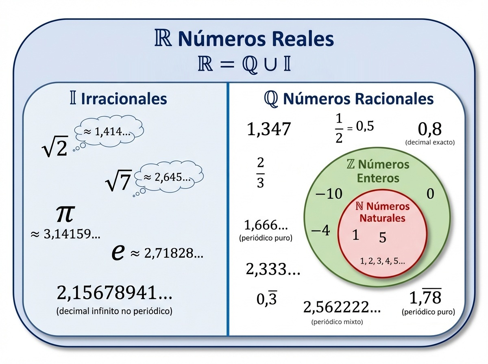
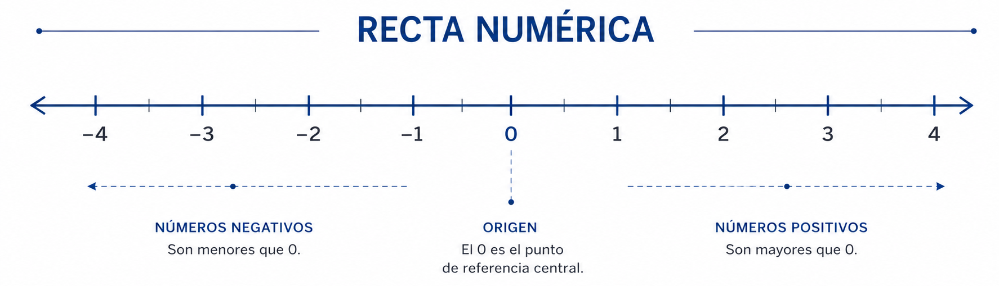

Una familia que se amplía
Cada conjunto numérico resuelve un problema que el anterior no podía: contar, repartir, medir.
Naturales
Sirven para contar y ordenar. \(\mathbb{N}=\{1,2,3,...\}\). El \(0\) no es natural: \(0\notin\mathbb{N}\).
Enteros
Naturales, sus opuestos negativos y el cero. \(\mathbb{Z}=\{...,-2,-1,0,1,2,...\}\)
Racionales
Se escriben como fracción \(a/b\), con \(a,b\in\mathbb{Z}\) y \(b\neq0\). Decimal exacto o periódico.
Irracionales
No se escriben como fracción. Decimal infinito no periódico. Ejemplos: \(\sqrt{2}\), \(\pi\), \(e\).
Mientras mirás el video, prestá atención a la relación de inclusión entre estos conjuntos.
Esa es la idea que cierra el video: cada conjunto contiene al anterior. Los irracionales \(( \mathbb{I} )\) también son reales, pero no son racionales.

¿Cómo reconocerlos?
La expresión decimal de un número da una pista clara sobre a qué conjunto pertenece.
| Tipo de decimal | Ejemplo | Conjunto |
|---|---|---|
| Exacto | \(0,25=1/4\) | ✓ \(\mathbb{Q}\) |
| Periódico puro | \(0,333...=1/3\) | ✓ \(\mathbb{Q}\) |
| Periódico mixto | \(1,1666...=7/6\) | ✓ \(\mathbb{Q}\) |
| Infinito no periódico | \(1,41421...=\sqrt{2}\) | 𝕀 |
Aproximación
El símbolo \(\approx\) indica aproximación. No corresponde escribir \(\sqrt{2}=1,41\) ni \(\pi=3,14\): esos valores no son exactos.
Ubicar, comparar y ordenar
En la recta numérica los números aumentan hacia la derecha. El \(0\) es el origen: los negativos quedan a su izquierda y los positivos, a su derecha.

Cómo ubicar fracciones, raíces y decimales en esa recta lo vemos en el video:
Orden
Dados dos números reales \(a\) y \(b\), se cumple exactamente una de estas relaciones:
Un número es mayor que otro si está ubicado más a la derecha en la recta.
Ejemplo: comparar \(-3,5\) y \(0,5\) en la recta
\(-3,5\) está a la izquierda de \(0,5\), por lo tanto \(-3,5 \lt 0,5\): todo negativo es menor que cualquier positivo, sin necesidad de calcular nada.
Estrategias para comparar
Negativos
Entre negativos, es mayor el que está más cerca del \(0\): \(-1>-4\).
Cero
El \(0\) es mayor que cualquier negativo y menor que cualquier positivo.
Decimales
Convení igualar cifras: \(2,1=2,10\), entonces \(2,10>2,07\).
Distancia al cero
El valor absoluto mide qué tan lejos está un número del \(0\), sin importar si está a la izquierda o a la derecha. Mientras mirás el video, relacioná cada cálculo con la idea de distancia al 0.
Definición
El valor absoluto de \(a\), escrito \(|a|\), es la distancia entre \(a\) y \(0\) en la recta numérica.
Como toda distancia, \(|a|\) es siempre \(\geq0\).
Positivos
Si \(a\geq0\), entonces \(|a|=a\). Ejemplo: \(|6|=6\).
Negativos
Si \(a\lt0\), entonces \(|a|=-a\). Ejemplo: \(|-8|=8\).
Interpretación
El signo indica dirección; el valor absoluto indica magnitud.
Verificá lo trabajado
\(|-9|=-9\)
\(0,9>0,89\)
El número \(-5\) está más cerca del \(0\) que el número \(-2\).
\(-7>-3\)
Para recordar
\(\mathbb{N}\subset\mathbb{Z}\subset\mathbb{Q}\subset\mathbb{R}\): cada conjunto está incluido en el siguiente.
La forma decimal distingue racionales de irracionales: exacto o periódico es \(\mathbb{Q}\); infinito no periódico es \(\mathbb{I}\).
En la recta numérica, más a la derecha es mayor.
\(|a|\) es siempre \(\geq0\): mide una distancia, no conserva el signo.